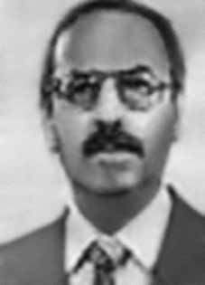

Luiz
Gonzaga
dos Santos
CIRCUNSTÂNCIAS DA MORTE
Luiz Gonzaga morreu no Hospital Geral de Recife, em 13 de setembro de 1967, em decorrência de ação perpetrada por agentes do Estado. Tinha sido preso em 1º de agosto de 1967 e, por ser oficial do Exército, foi levado para o Quartel do Exército, no bairro de Neves, em Niterói –(RJ), onde recebia visitas diárias da família. Julgado à revelia pela Auditoria da 7ª Região Militar, de Recife (PE), tinha sido condenado a 15 anos de prisão, em 16 de junho de 1967. Em setembro do mesmo ano, a família foi comunicada de que tinha sido transferido para Recife, para assinar um indulto. Dois dias depois, em 13 de setembro de 1967, receberam a informação de que Luiz Gonzaga havia morrido no Hospital Geral de Recife e que o corpo havia sido enterrado no cemitério de Santo Amaro, na mesma cidade. Em ofício datado de 11 de setembro de 1967, proveniente da Companhia de Guarda, encaminhado ao diretor do Hospital Geral de Recife, consta que, em consonância com um prévio entendimento verbal entre as autoridades, Luiz Gonzaga deveria ser internado no hospital por apresentar precário estado de saúde, decorrente de insuficiência cardíaca. A certidão de óbito datada de 13 de setembro de 1967, lavrada pelo médico Elói Farias Teles, informa que Luiz Gonzaga faleceu em razão de edema pulmonar agudo e insuficiência cardíaca. A relatoria da CEMDP considerou que Luiz Gonzaga não morreu de causas naturais, visto que o boletim do hospital informa que o paciente tinha a saúde bastante debilitada quando deu entrada e que apresentava “vômitos e falta de ar há três dias”, o que leva a crer que morreu em decorrência de maus tratos e torturas que sofreu enquanto esteve preso.
Luiz Gonzaga died at the General Hospital of Recife, on September 13, 1967, as a result of an action perpetrated by State agents. He had been arrested on August 1, 1967 and, as an Army officer, he was taken to the Army Barracks, in the neighborhood of Neves, in Niterói – (RJ), where he received daily visits from his family. Tried in absentia by the Audit of the 7th Military Region, in Recife (PE), he had been sentenced to 15 years in prison, on June 16, 1967. In September of the same year, the family was informed that he had been transferred to Recife, to sign a pardon. Two days later, on September 13, 1967, they received information that Luiz Gonzaga had died at the Recife General Hospital and that the body had been buried in the Santo Amaro cemetery, in the same city. In a letter dated September 11, 1967, from the Guard Company, sent to the director of the General Hospital of Recife, it is stated that, in line with a previous verbal understanding between the authorities, Luiz Gonzaga should be admitted to the hospital due to his precarious state of health, resulting from heart failure. The death certificate dated September 13, 1967, drawn up by doctor Elói Farias Teles, states that Luiz Gonzaga died due to acute pulmonary edema and heart failure. The CEMDP report considered that Luiz Gonzaga did not die of natural causes, as the hospital report states that the patient was in very poor health when he was admitted and that he had been experiencing “vomiting and shortness of breath for three days”, which leads us to believe that he died as a result of the mistreatment and torture he suffered while he was imprisoned.
Luiz Gonzaga murió en el Hospital General de Recife, el 13 de septiembre de 1967, como consecuencia de una acción perpetrada por agentes del Estado. Había sido detenido el 1 de agosto de 1967 y, como oficial del Ejército, fue trasladado al Cuartel del Ejército, en el barrio de Neves, en Niterói – (RJ), donde recibía visitas diarias de su familia. Procesado en rebeldía por la Auditoría de la 7ª Región Militar, en Recife (PE), había sido condenado a 15 años de prisión, el 16 de junio de 1967. En septiembre del mismo año, la familia fue informada de que había sido trasladado a Recife, para firmar un indulto. Dos días después, el 13 de septiembre de 1967, recibieron información de que Luiz Gonzaga había fallecido en el Hospital General de Recife y que el cuerpo había sido enterrado en el cementerio de Santo Amaro, en la misma ciudad. En carta de 11 de septiembre de 1967, de la Compañía de Guardia, enviada al director del Hospital General de Recife, se afirma que, de acuerdo con un entendimiento verbal previo entre las autoridades, Luiz Gonzaga debía ser internado en el hospital debido a su precario estado de salud, derivado de una insuficiencia cardíaca. El certificado de defunción del 13 de septiembre de 1967, redactado por el médico Elói Farias Teles, señala que Luiz Gonzaga falleció a causa de edema agudo de pulmón e insuficiencia cardíaca. El informe del CEMDP consideró que Luiz Gonzaga no murió por causas naturales, pues el informe hospitalario señala que el paciente se encontraba en muy mal estado de salud cuando ingresó y que presentaba “vómitos y falta de aire desde hacía tres días”, lo que lleva a creer que falleció como consecuencia de los malos tratos y torturas que sufrió mientras estuvo privado de libertad.